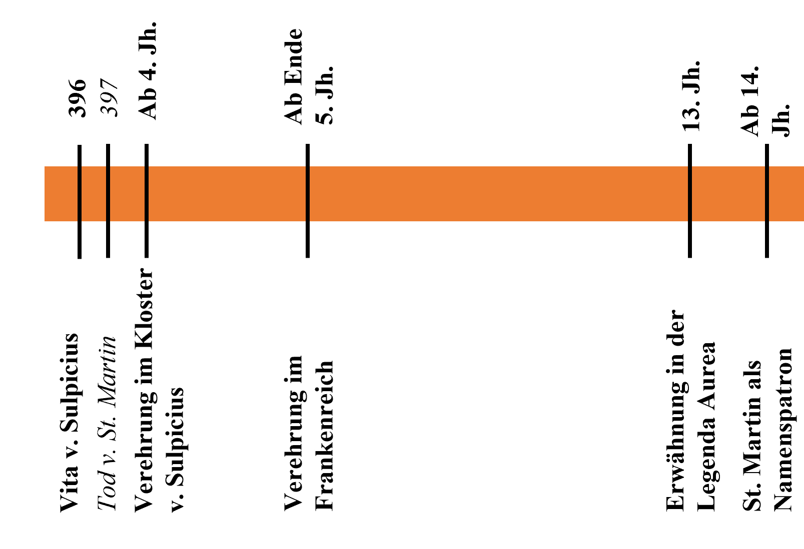
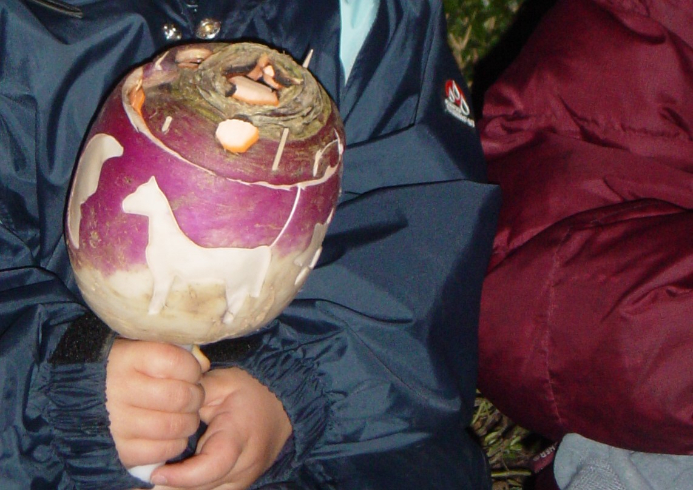

Im alten Dorfkern von Oberrohrdorf steht eine römisch-katholische Kirche namens St. Martin. Doch dies ist nicht nur der Name dieser Kirche, sondern der Name einer reichen Geschichte eines Bestseller-Heiligen. So dient St. Martin als Namensstifter unzähliger Kirchen, Ortschaften oder gar einer Karibikinsel. Zusätzlich ist er der Nationalheilige mehrerer Staaten (zum Beispiel Frankreich oder Ungarn), Patron der Armen, Gefangenen, Polizist:innen, Soldat:innen, Geflüchteten und weiterer. Entsprechend entwickelt es sich, dass er breitflächig verehrt wird. In Oberrohrdorf sowie in grossen Teilen der römisch-katholischen Deutschschweiz geschieht das mit dem sogenannten Räbeliechtliumzug.
Martinslegende
Martin von Tours, geboren ca. 316/317, begann bereits als Kind ein heiliges Leben zu führen. So äusserte er schon in jungen Jahren den ausdrücklichen Wunsch, sich in den Dienst Gottes zu stellen, was ihm damals noch nicht gewährt wurde. Doch er lebte seine ethischen Ideale (Nächstenliebe, Askese, etc.) trotzdem. Deshalb widerstrebte es ihm, als er ins Militär eingezogen wurde. Doch er fand im Umgang mit seinen Mitmenschen Möglichkeiten, ein ehrwürdiges Leben zu führen. Als er für diese nun sowieso schon seinen ganzen Besitz und Lohn aufgewandt hatte, begegnete er an einem äusserst kalten Wintertag einem (halb-)nackten Bettler und teilte seinen letzten Besitz, den Mantel, mit ihm (Abb. 1). In der darauffolgenden Nacht erschien ihm Christus im Traum und bedankte sich für den Mantel, den er in Analogie zu Mt 25,35-45 mit ihm geteilt hatte. Bestärkt durch dieses Erlebnis bat Martin bald darauf um seine Entlassung aus dem Militär, um sich ganz dem Dienst Gottes widmen zu können. Nachdem ein weiteres Wunder geschah, wurde ihm dies gestattet. Und egal wo er fortan hinkam, ereigneten sich Wunder dergleichen Art, wie sie bereits in der Bibel überliefert waren, weshalb eine Parallele von Jesus zu Martin denkbar wird. Als Martin das Amt des Bischofs übernahm, wurde sein Handeln noch stärker von Wundern begleitet. Schliesslich starb er nach einem langen, gottesfürchtigen und zugleich demütigen Leben der Legende nach am 11. November 397 eines natürlichen Todes (eigentlich starb er am Abend des 10. Novembers, aber der 11. November wurde zum Heiligentag).

Abbildung 1: Mantelteilung als Altarbild in der St. Martinskirche Oberrohrdorf. (Bild: Tabea Stauffer)
«Heiliger» Martin
Martin von Tours ist nicht heilig aufgrund eines blutigen Märtyrertods,
sondern wegen seines vorbildlichen Lebens, das von Gott mit unzähligen
Wundern gesegnet wurde. Dass er ein wahrer Gottesmann sei, bezeugten
schon zu seinen Lebzeiten unzählige Tiere, Menschen und Heilige. So
haben es Legenden über sein Wirken überliefert.
Seine reinigende Heiligkeit strahlte ebenfalls auf seine
Kleidungsstücke aus. So berichtet Sulpicius Severus (ca. 363–425) noch
über den lebenden Martin, dass Fäden aus seinem Gewand Kranke geheilt
hätten. Infolgedessen wurde nach seinem Tod der halbe Mantel, genannt
«cappa», auch als Reliquie in einem eigens dafür geschaffenen Raum
verehrt. Dies war wiederum namensstiftend für «Kapelle» sowie «Kaplan».
Ansonsten schuf seine Heiligkeit eine Grundlage für verschiedene Dinge
wie Bauten (hauptsächlich Klostergründungen), oder eben für einen
Feiertag sowie Riten (zum Beispiel der Martinsumzug).
Rezeption
Meilensteine und Rezeption von St. Martin. (Zeitstrahl: Tabea Stauffer)
Die Rezeption und somit die Verehrung von St. Martin weist mehrere
Meilensteine auf: Zuerst entstand die Vita durch seinen Zeitgenossen
Sulpicius Severus. Dann folgte die Verehrung im Kloster des Severus ab
dem 4. Jahrhundert. Ende des 5. Jahrhunderts erreichte er nach der
Bekehrung des Frankenkönigs Chlodwigs (2. Hälfte 5. Jahrhundert)
reichsweite Verehrung. So gelangte er wohl in die Schweiz und nach
Oberrohrdorf. Seine Breitenwirkung verfestigte sich im 13. Jahrhundert
mit der Aufnahme seiner Lebensbeschreibung in die Legenda Aurea, was die
damals bekannteste Sammlung von Heiligenlegenden war. Wahrscheinlich als
Folge dessen taucht der Name bei Bezeichnungen aller Art (Karibikinsel
St. Martin, Walsersiedlung St. Martin SG, etc.) im 14. Jahrhundert auf.
Die Anfänge des Räbeliechtliumzugs und der anderen Martinsriten
sind in diesem Zeitstrahl nicht genau festzumachen. Es kann angenommen
werden, dass sich solche Umzüge spätestens im Hochmittelalter
etablierten, da die Fastenzeit sowie die Verbindung mit einer
Lichtperikope (Perikope: thematische Einheit mehrerer
aufeinanderfolgender Bibelverse) damals schon Bestand hatten. St. Martin
war wohl ebenfalls schon ein bedeutender Heiliger, wie seine Erwähnung
in der Legenda Aurea zeigt. Zudem wäre es gut denkbar, dass ein spätes
Erntedankfest damals schon Bestand hatte. Ebenfalls waren
Heiligenprozessionen in dieser Zeit bereits bekannt. So spricht der
historische Kontext stark dafür, dass die Anfänge des Räbeliechtliumzugs
spätestens im Hochmittelalter zu finden sind.
Martinsfeste
Die Entstehung der Riten ist nicht mehr vollständig rekonstruierbar, aber sicherlich multifaktoriell. Erstens war Martin wohl ein bedeutender Heiliger. Zweitens steht der Martinstag vor dem Anfang der Fastenzeit vor Epiphania (Philipus-Fastenzeit). Dass solch ein Tag mit reichlich Essen gefeiert wird, zeigt sich noch heute an der Fastnacht. Drittens trifft der Tag mit der letzten Ernte zusammen. So werden die letzten Feldfrüchte wie die Kohlrübe (schweizerdeutsch: Räbe) eingeholt oder die Masttiere wie die Gänse geschlachtet. Viertens ist der Martinstag in der Perikopenordnung sicher seit dem 10. Jahrhundert mit Lucerna-Versen (früher: Lk 12,35; heute: Lk 11,38) verbunden. Als Zusammenspiel dieser Faktoren entstand wohl der Martinsumzug. Ein sonstiger paganer Ritus als Vorläufer ist nicht anzunehmen. Der Ritus mit den Gänsen entstand ähnlich. Einzig der letzte Punkt mit den Lucerna-Perikopen müsste durch folgende ergänzende Erzählung der Martinsvita ersetzt werden: Offenbar wollte Martin nicht Bischof werden, floh deshalb und versteckte sich vor seinen Verfolger:innen in einer Gänseherde. Als diese jedoch auftauchten, begannen die Gänse laut zu schnattern und verrieten sein Versteck. So wurde Martin Bischof und versprach den Gänsen als Strafe, dass er an ihnen jährlich ein Massaker verüben werde. So wird bis heute der Martinstag in Frankreich, Italien sowie Österreich mit einem Gänsebraten und Spielen rund um Gänse gefeiert. Zum Kanton Jura, wo der Martinstag mit einem Schweinebraten gefeiert wird, konnte der Literatur keine solche Geschichte entnommen werden.
Abbildung 2: Geschnitzte Räbe mit St. Martins-Pferd. (Bild: Tabea Stauffer)
Martinsumzug
Früher wurden die Räbelichtliumzüge von den Kirchen organisiert. Deshalb
starteten und endeten sie in der Kirche und wurden von einer Messe
begleitet. Der Umzug wurde jeweils von St. Martin beziehungsweise einem
Reiter in «römischer» Soldatenkleidung angeführt. Danach folgte die
Kirchgemeinde, wobei vor allem die Kinder kunstvoll geschnitzte
Kohlrüben trugen, die von innen durch Kerzen erhellt wurden (vergleiche
Abbildung 2). Alle zusammen sangen Lieder zu Ehren von St. Martin. In
den letzten Jahren änderte sich jedoch einiges. Die Organisation des
Umzugs liegt meist in der Hand der Schulen. Deshalb fällt die Messe weg
und der Start- sowie Schlusspunkt ist nun eher die Schulanlage. Aus
ökologischen Gründen werden nun vermehrt Papierlaternen verwendet und
das Liedgut wurde durch säkulare Texte ersetzt (im 19./20. Jahrhundert:
Sankt. Martin, heute: Miis Rääbeliechtli). Auch die Figur von St. Martin
ist vielerorts problematisch. Darf St. Martin von einer Frau
personifiziert werden? Soll er noch mit Waffen porträtiert werden? Und
darf der Umzug eine Pflichtveranstaltung für alle Schüler:innen
unabhängig von Konfession oder Religion sein? Meist wird seine Figur
deshalb immer mehr ausgeklammert und der Ritus unter dem Namen
Räbeliechtliumzug fortgeführt. Gerade als solcher Lichterumzug erfährt
der Ritus jedoch zunehmende Popularität und wird vielerorts wieder
eingeführt.
In Oberrohrdorf gibt es eine Co-Existenz des Martinsbrauchs. Der
Umzug findet in säkularisierter Form statt und wird durch die Schule
Mitte November organisiert. Religiös ist der Feiertag durch eine
Martinsmesse am 11. November abgedeckt, zu der die Kinder ebenfalls
eingeladen sind, Laternen mitzubringen. Der eigentliche Fokus der Messe
liegt aber auf der Wohltätigkeit. So ist die Zehntenabgabe spielerisch
ein Thema oder die Besucher:innen erhalten beim Ausgang eine
Martinswegge, die sie miteinander teilen können.
Bedeutung
St. Martins Signifikanz ist vielschichtig. Literarisch war die Vita von
Sulpicius Vorbild für mittelalterliche Hagiographien. Somit wurde er
spirituell zum Heiligen-Prototypen. Weiter lässt sich seine
gesellschaftliche Bedeutung an den Ortsbezeichnungen, dem verbreiteten
Martinskult sowie den bestehenden Feierlichkeiten erkennen. Da diese
Feierlichkeiten zwar verändert aber doch seit langem anhalten, ist seine
historische Bedeutung ebenfalls gegeben.
Diese vielschichtige
Bedeutung scheint der Heilige in naher Zukunft nicht einzubüssen, denn
mit dem Räbeliechtliumzug schafft er es sogar, in einer säkularisierten
Welt an Bedeutung zu gewinnen. Ob der Ritus trotz dieser Veränderung
auch weiterhin für christliche-ethische Ideale wie die Armenfürsorge
stehen wird, wird sich noch zeigen. Jedenfalls ist und bleibt St. Martin
ein hervorragendes Beispiel für die Rezeption von Heiligkeit im Wandel
der Zeit.
Tabea Stauffer ist Theologiestudentin im Bachelorstudium an der Universität Bern.
Weitere Artikel von {{ author.author }} finden Sie hier:
Zur Vertiefung:
- Moser, Dietz-Rüdiger: Bräuche und Feste im christlichen Jahreslauf. Brauchformen der Gegenwart in kulturgeschichtlichen Zusammenhängen, Graz/Wien/Köln 1993.
- Schäfer, Joachim: Art. «Martin von Tours», in: Ökumenisches Heiligenlexikon, verfügbar unter: heiligenlexikon: Martin von Tours (15.09.2022).
- Sulpicius, Severus/Huber-Rebenich, Gerlinde: Vita sancti Martini/Das Leben des Heiligen Martin. Lateinisch-Deutsch, Stuttgart 2010.